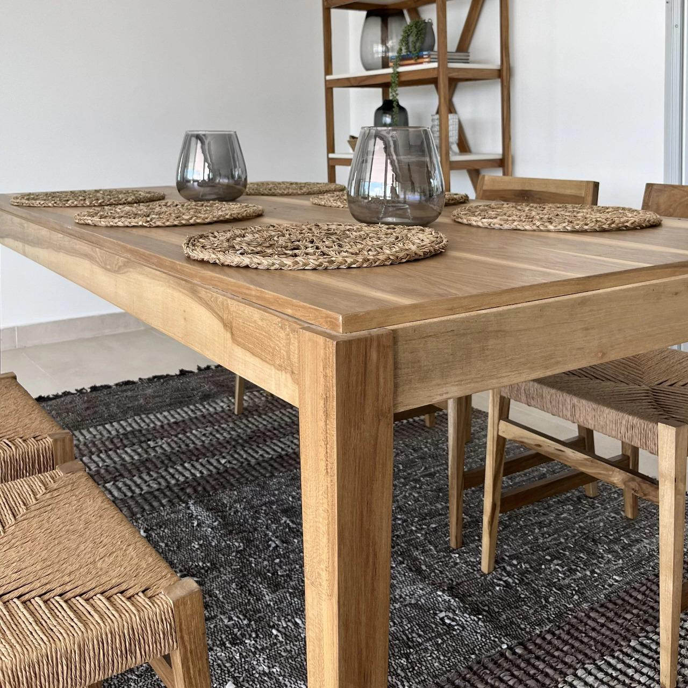
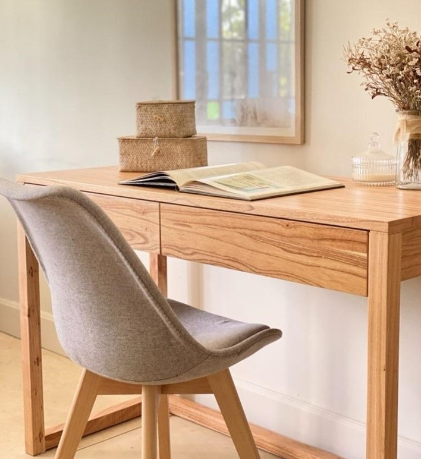

Nuestros muebles destacados

Mesa de Comedor de Madera
Una mesa de comedor rectangular con acabado en madera natural, de líneas limpias y robustas. Perfecta para un ambiente cálido y minimalista, con espacio suficiente para reuniones familiares o cenas íntimas.

Lámpara de Pie de Madera
Una lámpara de pie con base de trípode de madera, ideal para añadir un toque moderno y acogedor al espacio. La pantalla de tela aporta una luz suave, perfecta para áreas de descanso o lectura.

Escritorio de Madera Natural
Un escritorio de diseño elegante y sencillo, con superficie lisa de madera natural y cajones incorporados. Su tamaño compacto lo hace ideal para espacios de trabajo en casa, ofreciendo funcionalidad sin perder estilo.